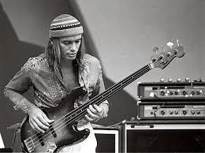

FUSİON JAZZ DİNLEMEK İSTEYENLERE 5 TAVSİYE
Fusion jazz 1960’ların sonunda Amerika’da ortaya çıkmış müzik türüdür.Fusion kelimesi ‘birleşme,kaynaşma’ anlamına gelmektedir.Fusion jazz ise jazz müzik ile bir diğer müzik türünün harman olmasıyla ortaya çıkar. Bu müzik türü 1950’lerin başlarında ortaya çıkan rock and roll”dan fazlasıyla etkilenmiştir. Fusion jazz geniş çevrelerce modern jazz olarak anılır. Fusion jazz’ı geleneksel jazz’dan ayıran bir özelliği piyano’nun yerini synthesizer’a kontrbass’ın yerini bas gitara bırakması ve elektro gitarın da daha ön plana çıkacak şekilde icra edilmesidir. Bu arada liste subjektiftir yorumlarda kendi fikirlerinizi benimle paylaşarak beni mutlu edebilirsiniz.
1-Miles Davis - Miles In The Sky
Miles davis fusion jazz türünün öncülerinden sayılır 1968 yılında çıkardığı miles in the sky albümü ilk fusion jazz albümü olarak nitelendirilir .
2-Weather Report - ‘Heavy Weather’
1977 yılının başlarında ortaya çıkan bu albüm fusion jazz türünün bana göre ulaştığı en üst seviyedir.Albümde latin müziği ve rock müzik esintilerini jazz ile harmanlanmış şekilde çokça duyabilirsiniz birdland favori parçam :)
3- Jaco Pastorius - Jaco Pastorius :)
1976 yılında kendi ismini taşıyan albümünü çıkaran bas gitar virtüözü jaco pastorius albümünde jazz müziği pop,blues ve latin müzik ile birleştirmiştir .Bence albümün en iyi şarkısı ‘come on come over ‘

4-Marcus Miller -Renaissance
Marcus miller iki binli yılların en iyi fusion jazz temsilcilerinden biri jazz müziği funk ve afrika müziğiyle birleştirip ortaya yeni şeyler çıkarmaya devam ediyor .2012 yılında çıkardığı renaissance albümü daha funk bir yapıda bence albümün en iyi şarkısı ‘detroit’ jazz ile harmanlanmış afrika esintileri duymak istiyorsanız afrodeezia albümünüde tavsiye ederim .
5- Victor Wooten - Trypnotyx
2017 yılında çıkan bu album son yılların en iyilerinden bu albümde victor wooten’a saksafon’da bob franceschini, bateride ise dennis chambers eşlik ediyor. Albümün en öne çıkan parçası ‘dc10’
Önerilen Yazılar
-

Using Repetition and Patterns in Photography.
-

Health Benefits Of Morning Dew.
-

The Art Of Visual Storytelling.